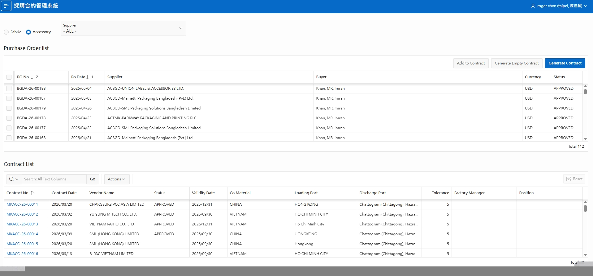

01
PO · 全生命週期
採購合約系統開發
公司原本沒有合約管理機制 — 因為沒有,才從零打造。 APEX + Oracle DB,從 HS_CODE 主檔到合約 / 銀行報表全鏈串通。
- ① Fabric / Accessory 切換
- ② 蒐集 PO → 一鍵建立合約
- ③ HS_CODE 257 筆物料分類主檔
- ④ 預先取號的「空合約」機制(上線後優化)
反思 · 下次會在開發階段就引入 AI 協作,加速迭代

採購合約系統主畫面 — 從待蒐集 PO 到已建立合約的完整工作面板